| Previous | Table of Contents | Next |
An M/M/1 queue, which is the most commonly used type of queue, can be used to model single–processor systems or to model individual devices in a computer system. It is assumed that the interarrival times and the service times are exponentially distributed and there is only one server. There are no buffer or population size limitations and the service discipline is FCFS. Th analyze this type of queue, we need to know only the mean arrival rate λ and the mean service rate µ.
The state of this queue is given by the number of jobs in the system. A state transition diagram for the system is shown in Figure 31.2. It is similar to that of the birth-death processes with the following correspondence:
λn = λ, n = 0,1,2,...,∞
µn = µ, n = 1,2,...,∞
Theorem 31.1 gives us the following expression for the probability of n jobs in the system:
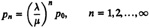
The quantity λ/µ is called traffic intensity and is usually denoted by symbol ρ. Thus
Pn = ρnp0
Since all probabilities should add to 1, we have the following expression for the probability of zero jobs in the system:
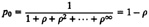
Substituting for ρ0 in pn, we get
pn = (1 – ρ)ρn, n = 0,1,2,...∞
FIGURE 31.2 State transition diagram for an M/M/1 queue.
Notice that n is geometrically distributed. We can now derive many other properties of the M/M/1 queues. For example, the utilization of the server is given by the probability of having one or more jobs in the system:
U = 1 – ρ0 = ρ
The mean number of jobs in the system is given by
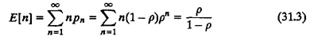
The variance of the number of jobs in the system is
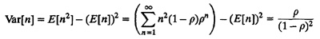
The probability of n or more jobs in the system is
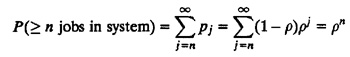
The mean response time can be computed using Little’s law, which states that
That is,
E[n] = λE[r]
or
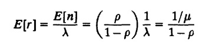
The cumulative distribution function (CDF) of the response time can be shown to be
F(r) = 1 – e–r µ(1–ρ)
Notice that the response time is exponentially distributed. From the distribution, we can also find out its percentiles. For example, the q-percentile of the response time can be computed as follows:
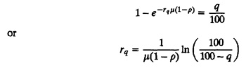
Similarly, the CDF of the waiting time can be shown to be
F(w) = 1 – ρe–wµ(1–ρ)
This is a truncated exponential distribution. Its q-percentile is given by
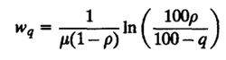
This formula applies only if q is greater than 100(1 – ρ). All lower percentiles are zero. This can be stated in one equation as follows:
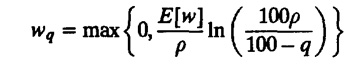
The mean number of jobs in the queue is given by
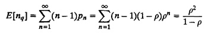
When there are no jobs in the system, the server is said to be idle; at all other times the server is busy. The time interval between two successive idle intervals is called busy period. All results for M/M/1 queues including some for the busy period are summarized in Box 31.1. The following example illustrates the application of these results in modeling a network gateway.
ρ13 = 0.2513 = 1.49 × 10–8
≈ 15 packets per billion packets
To limit the probability of loss to less than 10–6,
ρn ≤ 10–6
|
Box 31.1 M/M/1 Queue
|
n > log(10–6)/log(0.25) = 9.96
The last two results about buffer overflow are approximate. Strictly speaking, the gateway should actually be modeled as a finite buffer M/M/1/B queue. However, since the utilization is low and the number of buffers is far above the mean queue length, the results obtained are a close approximation.
Figure 31.3 shows the response time as a function of the utilization at the gateway of Example 31.1. As the rate increases, the utilization approaches 1 and the number of jobs in the system and response time approach infinity. This infinite response time is the key reason for not subjecting a server to 100% utilization. For an M/M/1 queue to be stable, the traffic intensity ρ must be less than 1.
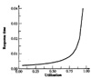
FIGURE 31.3 Gateway response time as a function of utilization.
| Previous | Table of Contents | Next |
){kind=link}
){kind=link}
){kind=link}
){kind=link}